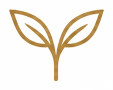
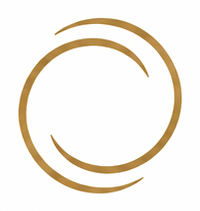
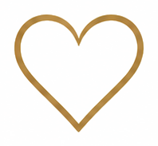
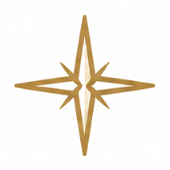
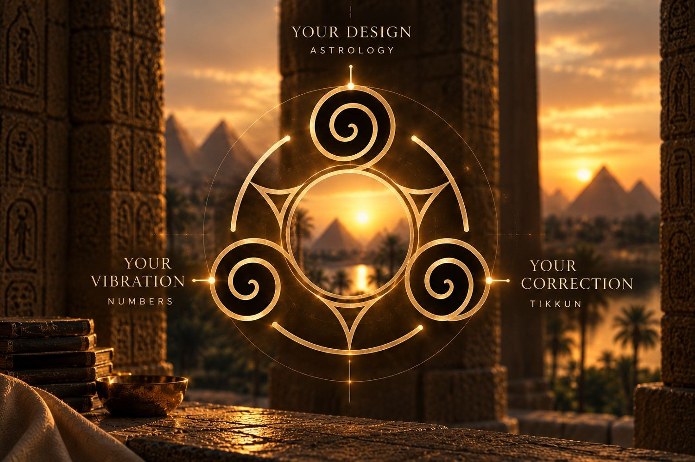
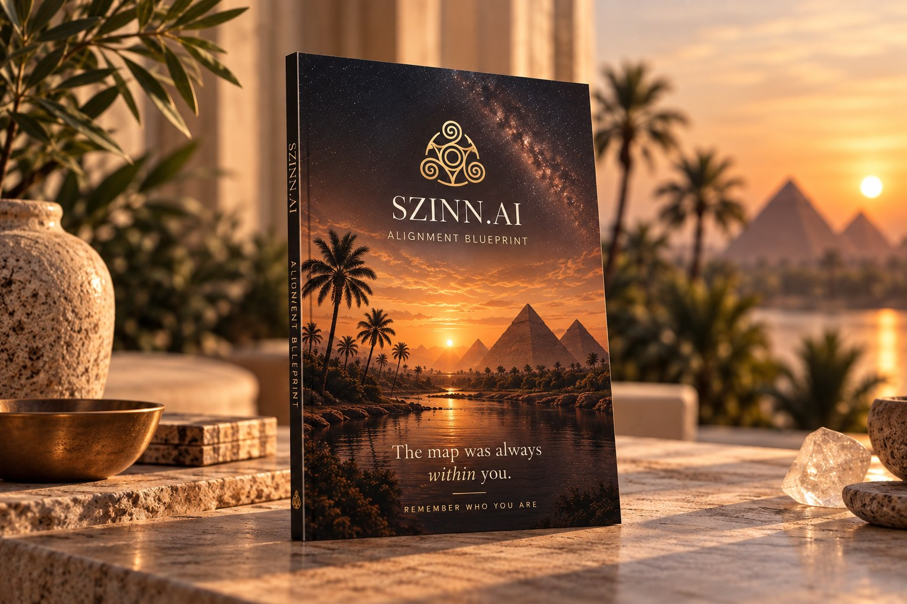

Een dieper jij
Zie waarom je bent zoals je bent, en word weer verliefd op wie jij bent.
Jouw persoonlijke digitale Alignment Blueprint.
Mijn Blueprint →Misschien herken je dit.
Je bent niet de enige. Dit zijn heel menselijke ervaringen.
Je voelt je anders
Alsof je de wereld altijd al net iets anders hebt gezien.

Je voelt meer
Je voelt dat er een diepere bedoeling is, maar die is niet altijd helder.

Je herhaalt patronen
Dezelfde uitdagingen komen terug, ook als je probeert vooruit te gaan.

Je wilt alignment
Je verlangt naar meer betekenis, helderheid en rust in je dagelijks leven.

Je bent er klaar voor
Je voelt de trek om jezelf dieper te begrijpen en meer vanuit jezelf te leven.

De methode
Andere lenzen.Een helderder jij.
SZINN brengt astrologie, numerologie en Kabbalah Tikkun samen in één persoonlijke Blueprint. Geen drie losse lezingen, maar één helder beeld van jou.
- AstrologieJouw ontwerp. Het patroon van de hemel bij je geboorte.
- NumerologieJouw trilling. De patronen die je getallen laten zien.
- TikkunJouw correctie. De thema's die terugkomen om herkend te worden.
Geen drie losse lezingen. Eén samenhangend beeld.
Wat mensen zeggen
"De SZINN Blueprint geeft een ongelooflijk inzicht in wie ik ben en wie ik aan het worden ben. Dit is een instrument voor het leven."
"Het is als een spiegel die op veelzijdige wijze laat zien waarin je mag groeien en waar je op mag letten. Heel waardevol voor jezelf en als cadeau aan je dierbaren."
"Een ware eyeopener. Het voelde alsof ik door een spiegel liep die mij liet zien wie ik altijd al ben geweest. Diepgaand, helder en verrassend herkenbaar."

De Blueprint
De SZINN Alignment Blueprint
Een persoonlijke digitale Blueprint die laat zien hoe jij werkt, wat je voelt, wat blijft terugkomen en hoe astrologie, numerologie en Tikkun in jouw leven samenkomen.
- Jouw persoonlijke digitale Alignment Blueprint
- Je astrologische analyse
- Je numerologische profiel
- Je Tikkun-thema's
- De patronen die de drie verbinden
- Praktisch inzicht voor je dagelijks leven
- 13 persoonlijke secties
- Digitaal geleverd binnen 48 uur
Inbegrepen
De SZINN Companion, jouw AI-gidsDe Companion is een AI-gids die jouw Blueprint heeft gelezen. Vraag hem waarom een patroon steeds terugkomt, wat een plaatsing voor jou betekent of wat je er deze week mee kunt, en hij antwoordt vanuit jouw eigen kaart. De eerste 11 dagen gratis.
Eenmalige aankoop · Geen abonnement nodig
Ook onderdeel van SZINN: Dagelijkse Integratie en de Community · Bekijk alle producten →
Maak kennis met de SZINN Companion.
Je Blueprint is het startpunt. De Companion helpt je verder de diepte in, met persoonlijke begeleiding, steun op het moment zelf en inzichten die met je meegroeien.
Meer dan antwoorden. Een dieper gesprek.
Ontdek de Companion →Gratis SZINN-inzicht
Wat vraagt dit jaar je op te merken?
Elk jaar draagt zijn eigen thema. Je persoonlijk jaar is een eenvoudige lens op het hoofdstuk waarin je nu leeft.
Ontdek je persoonlijk jaar →Gratis · Duurt 20 seconden · Geen account nodig
De tijd duwt je niet. Hij nodigt je uit.
Veelgestelde vragen
Wat is SZINN?
SZINN is een persoonlijk zelfinzichtplatform dat astrologie, numerologie en Kabbalah Tikkun samenbrengt in één persoonlijke Alignment Blueprint. Het is een spiegel voor herkenning, geen voorspelling.
Wat is de Alignment Blueprint precies?
Een persoonlijk digitaal document, op basis van je geboortedatum, -tijd en -plaats, dat je geboortekaart, je numerologische profiel en je Tikkun-thema's als één geheel leest. Dertien persoonlijke secties, geleverd als PDF en als persoonlijk online dashboard.
Is de Blueprint digitaal of fysiek?
Digitaal. Je ontvangt binnen 48 uur een fraai vormgegeven PDF en toegang tot je persoonlijke dashboard. De PDF is geschikt voor print, dus je kunt hem zelf uitprinten.
Heb ik mijn exacte geboortetijd nodig?
Je geboortetijd bepaalt je Ascendant, je huisindeling en de exacte graad van je Maan. Zonder tijd worden die delen een benadering en dat vermelden we in je Blueprint; alle andere planeetposities, de knopenas, je numerologie en de Tikkun-laag blijven volledig accuraat.
Hoe snel ontvang ik hem?
Binnen 48 uur, meestal veel sneller. Zodra je Blueprint klaar is, ontvang je een e-mail met inloggegevens voor je persoonlijke portaal.
Zit er een abonnement aan vast?
Nee. De Blueprint is een eenmalige aankoop. Dagelijkse Integratie (€3,69 per maand) en de Community (€23,69 per maand) zijn optioneel en maandelijks opzegbaar.
Wat gebeurt er na de 11 gratis dagen?
Je Blueprint blijft van jou. Je kiest zelf of je doorgaat met Dagelijkse Integratie of de Community; doe je niets, dan wordt er niets afgeschreven.
Hoe gebruikt SZINN AI?
De berekeningen lopen via Swiss Ephemeris en een pipeline die speciaal voor SZINN is gebouwd. De methode, alle basisteksten en het SZINN-systeem zijn ontwikkeld door Elly Elizabeth Korving. AI is het instrument; de visie, structuur en inhoud zijn menselijk. Je geboortegegevens worden alleen gebruikt voor je eigen Blueprint en dagelijkse duiding.
Herinner wie je bent.
Je hoeft niemand anders te worden.
Begin met herkennen wie er al is.